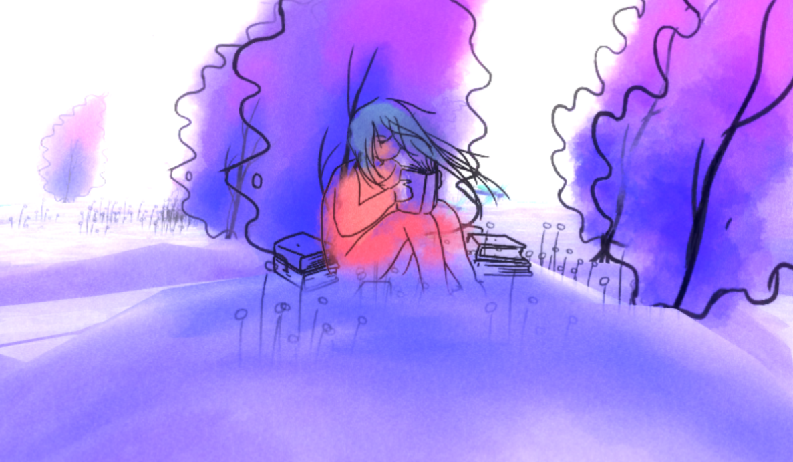
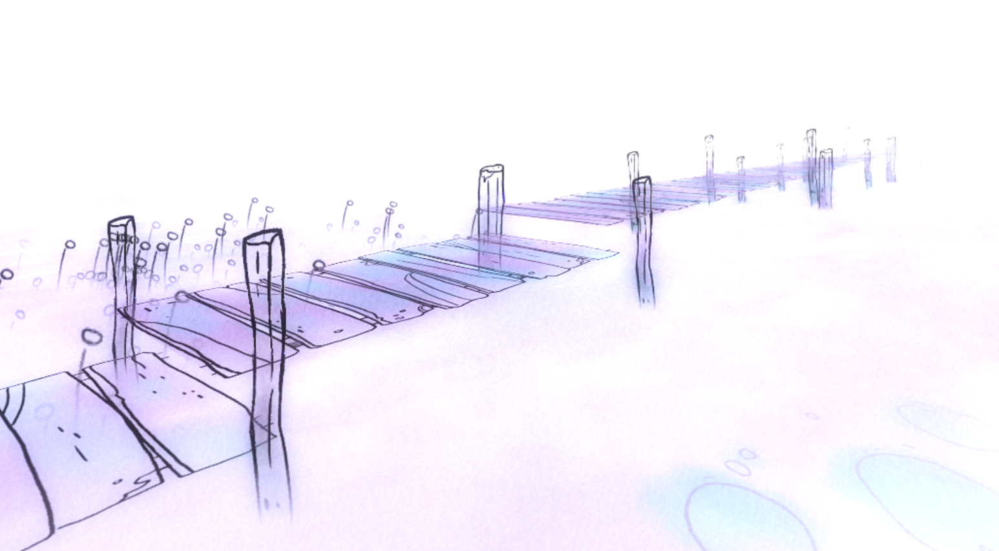
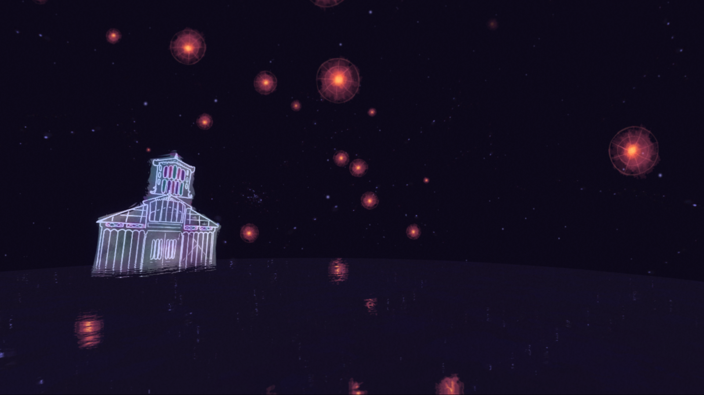
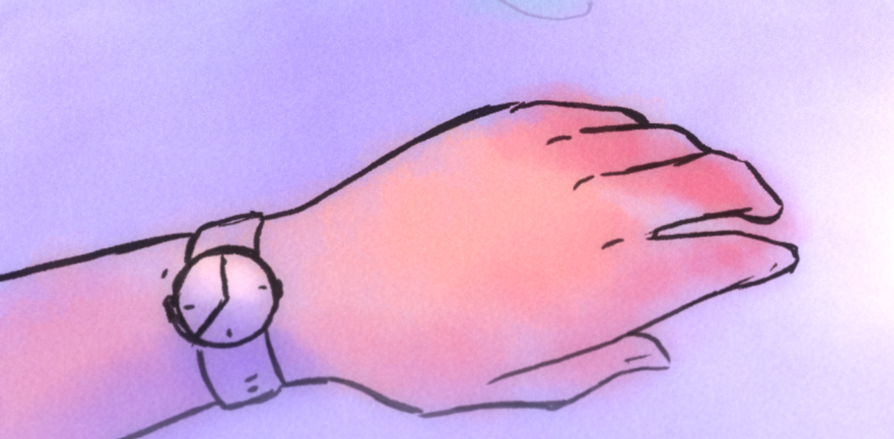
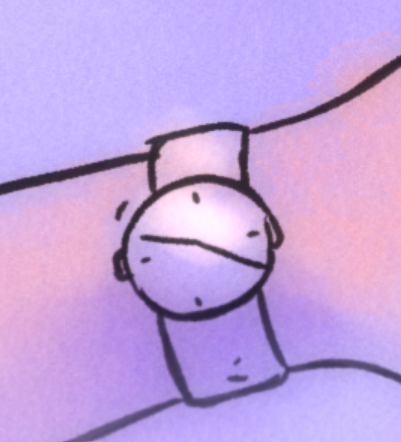
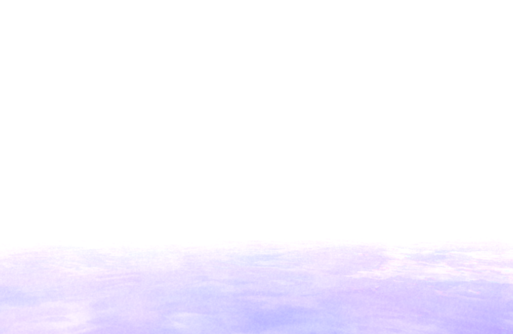

Sacramento has a very simple gameplay loop. You walk around in a white space full of simple nature and a few animals for a few minutes until it brings you back to where it spawns you in and back to the title.
Sacramento starts with you (in first person) in a train car with the title on your right and a window to outside on your left. You can look around as the train car moves. Upon left clicking, a bell tolls and the screen fades to white and you arrive at a train stop. The train stop is a small cobble platform, fenced off on three sides, with a clock that can't seem to tell you what time it is, as it's hands are spinning rather aimlessly. From there, you can wander around and discover plants, animals, and structures.


Some of the first things you will see wandering around are some trees. They are near where you get dropped off. You also might find a woman reading upon a small hill.



Close still, but slightly west, are some hills and pools of water between them. Past those is a group of flamingoes and spinning flowers. Some of the things you encounter react to you differently. The flamingoes, when you get close to them, start turning their head and squawking. The dragonfly, once you get close enough, will zip away from you in a flash.


On the other side of the map, you'll find a bridge that leads you through a standing waterfall. Behind the waterfall, there are fish and jellyfish floating round. The jellyfish seem to only appear behind you once you've wandered far enough past the waterfall.



Up north in the map, there are some smaller hills with what appears to be small batches of coral. There are lilypads and some large water lily flowers, and in the far north, there is a large building. it seems like most of the time, you can't enter the building, but it does have some form of interior modelled behing the facade. If instead of wandering around first, and going straight ahead as you get dropped off, the door is open, and you actually can enter the building, and get trasnported to a dark room with floating orange lights. once you leave the room, the door closes behind you.



There are some things that appear no matter where you are. The sky, of course, is always visible (unless you're looking down). There seems to be some sort of daylight cycle, while the sky is usually white, it may occasionally fade through a yellow-orange and turn a light purple. There are birds in the sky, most flying from northwest to southeast, and some from northeast to southwest. There is a slight fog that seems to surround you as you wander that obscures anything far enough away from you. While left clicking seems to do nothing (except start you from the title screen), right clicking at any time will make your character bring up a watch. the watch, like the clock where you are dropped off, has no reliable sense of time.





Sacramento offers little challenge, if any at all, but that isn't the point. There are no 'characters' in the sense that you can't verbally interact with anything, and there's no 'story' or 'goals' in the sense that nothing has to happen. It's simply an ambient world to wander around in and see a surreal representation of some things the creator decided to make, until you've seen everything and close the game.